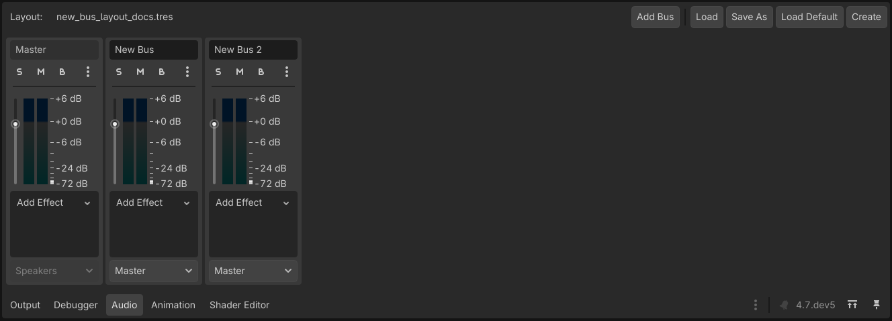
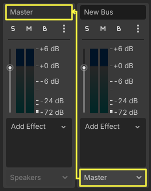
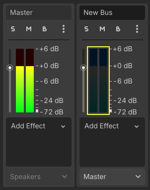

Audio buses
Introduction
Godot's audio processing code has been written with games in mind, with the aim of achieving an optimal balance between performance and sound quality.
Godot's audio engine allows any number of audio buses to be created and any number of effect processors can be added to each bus. Only the hardware of the device running your game will limit the number of buses and effects that can be used before performance starts to suffer.
Decibel scale
Godot's sound interface is designed to meet the expectations of sound design professionals. To this end, it primarily uses the decibel scale.
For those unfamiliar with it, it can be explained with a few facts:
The decibel (dB) scale is a relative scale. It represents the ratio of sound power by using 20 times the base 10 logarithm of the ratio (20 × log10(P/P0)).
For every 6 dB, sound amplitude doubles or halves. 12 dB represents a factor of 4, 18 dB a factor of 8, 20 dB a factor of 10, 40 dB a factor of 100, etc.
Since the scale is logarithmic, true zero (no audio) can't be represented.
0 dB is the maximum amplitude possible in a digital audio system. This limit is not the human limit, but a limit from the sound hardware. Audio with amplitudes that are too high to be represented properly below 0 dB create a kind of distortion called clipping.
To avoid clipping, your sound mix should be arranged so that the output of the master bus (more on that later) never exceeds 0 dB.
Every 6 dB below the 0 dB limit, sound energy is halved. It means the sound volume at -6 dB is half as loud as 0dB. -12 dB is half as loud as -6 dB and so on.
When working with decibels, sound is considered no longer audible between -60 dB and -80 dB. This makes your working range generally between -60 dB and 0 dB.
This can take a bit getting used to, but it's friendlier in the end and will allow you to communicate better with audio professionals.
Audio buses
Audio buses can be found in the bottom panel of the Godot editor:

An audio bus (also called an audio channel) can be considered a place that audio is channeled through on the way to playback through a device's speakers. Audio data can be modified and re-routed by an audio bus. An audio bus has a VU meter (the bars that light up when sound is played) which indicates the amplitude of the signal passing through.
The leftmost bus is the master bus. This bus outputs the mix to your speakers so, as mentioned in the Decibel scale section above, make sure that your mix level doesn't reach 0 dB in this bus. The rest of the audio buses can be flexibly routed. After modifying the sound, they send it to another bus to the left. The destination bus can be specified for each of the non-master audio buses. Routing always passes audio from buses on the right to buses further to the left. This avoids infinite routing loops.

In the above image, the output of Bus 2 has been routed to the Master bus.
Playback of audio through a bus
To test passing audio to a bus, create an AudioStreamPlayer node, load an AudioStream and select a target bus for playback:

Finally, toggle the Playing property to On and sound will flow.
See also
You may also be interested in reading about Audio streams now.
Adding effects
Warning
This feature is not supported on the web platform if the AudioStreamPlayer's playback mode is set to Sample, which is the default. It will only work if the playback mode is set to Stream, at the cost of increased latency if threads are not enabled.
See Audio playback in the Exporting for the Web documentation for details.
Audio buses can contain all sorts of effects. These effects modify the sound in one way or another and are applied in order.

For information on what each effect does, see Audio effects.
Automatic bus disabling
There is no need to disable buses manually when not in use. Godot detects that the bus has been silent for a few seconds and disables it (including all effects).

Disabled buses have a dark blue VU meter instead of a red-green one.
Bus rearrangement
Stream Players use bus names to identify a bus, which allows adding, removing and moving buses around while the reference to them is kept. However, if a bus is renamed, the reference will be lost and the Stream Player will output to Master. This system was chosen because rearranging buses is a more common process than renaming them.
Default bus layout
The default bus layout is automatically saved to the
res://default_bus_layout.tres file. Custom bus arrangements can be saved
and loaded from disk.